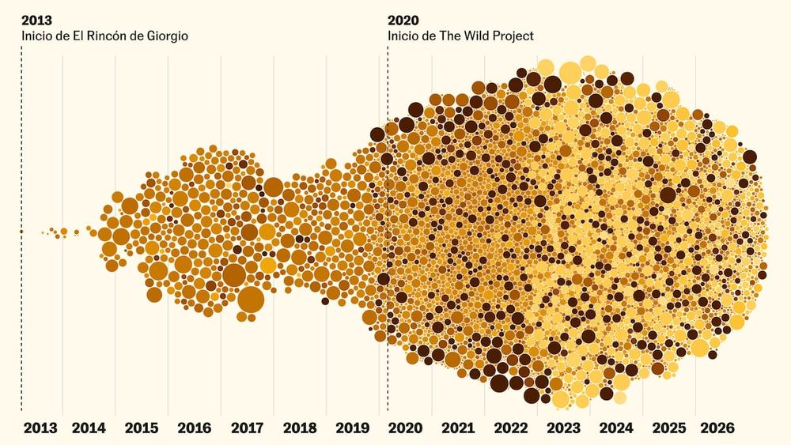

¿Cómo es Jordi Wild? Esto es lo que dice un análisis de 9.000 vídeos de su canal

El pódcast que han visitado tres candidatos a la presidencia del Gobierno, excepto Abascal, es cosa de hombres. Las mujeres apenas protagonizan el 7% de sus entrevistas
Al podcast de YouTube de Jordi Wild solo habían ido dos políticos hasta ahora: el presidente de Esquerra, Oriol Junqueras, y la líder de la oposición venezolana, María Corina Machado. Ambos están entre los 100 episodios con menos audiencia de los casi 400 que ha grabado Wild. A pesar de este desinterés general por la política, ahora el popular youtuber ha entrevistado a tres candidatos a la presidencia del Gobierno de España: Pedro Sánchez, Alberto Núñez Feijóo y Ada Colau. Las tres entrevistas las publica este viernes. “Es el proyecto profesional más grande que jamás he hecho”, aseguró Wild el miércoles, el mismo día que explicó que Santiago Abascal, de Vox, ha renunciado a ser…